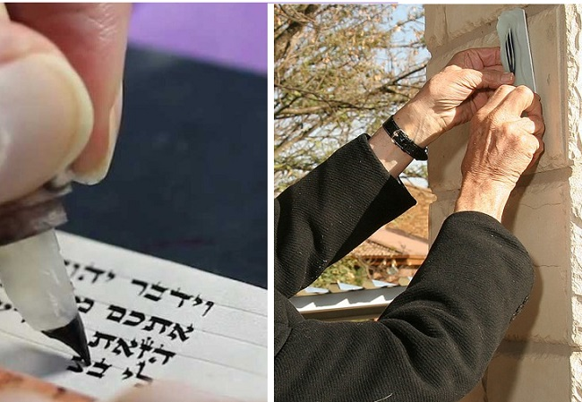

Bargain Basement Mezuzos or Worthless Mezuzos?
As a result of the inspiration generated a little over one-and-a-half years ago by the commemoration of the fifty-year anniversary of the Rebbe launching the Tefillin Campaign, many bachurim and married men stepped up their involvement in the Rebbe’s mivtzaim, as part of their effort to prepare the world to greet Moshiach. * That increase in activity led to a marked rise in the sale of tefillin and mezuzos, especially those categorized as “mivtzaim mezuzos” and “tefillin for mivtzaim.” * Beis Moshiach undertook an investigation (published in Hebrew at the time) and uncovered many serious failings in the field of “Stam” (Sifrei Torah, Tefillin and Mezuzos) products, particularly regarding low cost mezuzos. * Sofrim, dealers in religious articles, shluchim and rabbis, spoke to Beis Moshiach about pasul (invalid) mezuzos being passed off as kosher and unscrupulous dealings in the field of Stam. * They also offered tips to us, the customers, as to how to avoid buying a pasul mezuza, and what we can do to stem the tide. * Part 1 of 2

Commemorating fifty years of the Rebbe’s mivtza tefillin (launched shortly before the Six Day War in 1967), was a definite boost to arouse Anash to get more involved in mivtzaim. For example, Lubavitch Youth Organization in conjunction with Machon Stam in Crown Heights, launched a special campaign for checking tefillin at a special reduced price, along with many advertising materials encouraging participation in mivtza tefillin.
In Eretz Yisroel, various Chabad activist groups published calls to married and working men to go out and do mivtza tefillin. In Paris, there was even a special farbrengen that was held for the express purpose of inspiring Anash and a specially designed tefillin stand was built.
All these, plus many local and individual initiatives, had a direct effect on increasing the sales turnover in the Stam products market. Obviously, this increase in demand is mainly for what is often described as “mivtzaim mezuzos” and “tefillin for mivtzaim.” These terms refer to mezuzos and tefillin that are very low priced, in order to mitigate any objections on the part of the mekuravim, who might be put off by having to spend a lot on a new mitzva.
Unfortunately, the results of our investigation concluded that when buying “mivtzaim mezuzos” at sharply discounted prices, there is a high likelihood that the mezuzos are absolutely pasul. Despite good intentions to ease the financial costs for the mekuravim, this is actually causing them to stumble with an invalid mezuza. In some cases, the invalidating issue is difficult to discern through a standard check, as we will explain further in the article.
Over the years, most Jews lived in closed communities and all their needs, material and spiritual, were supplied within the community itself. Meat was bought from the local butcher whom they knew personally and the shochet was also a known personage. Tefillin and mezuzos were bought from the community’s sofer whom they all knew as G-d fearing.
The world has turned into a global village and even Jewish communities have taken on entirely new forms. Food products that we buy are not manufactured only in the city where we live; some of them aren’t even manufactured in our country. This has made it necessary for kashrus organizations to send their employees all over the world to ensure that the food we eat is, in fact, kosher.
Unfortunately, the kashrus revolution in the area of food production has skipped over the area of Jewish ritual items. Although many Jews today buy tefillin and mezuzos without personally knowing the sofer or his level of yiras Shamayim, the public still hasn’t “gotten” the fact that before buying tefillin or mezuzos, a hechsher is needed that testifies that the product stands up to halachic standards, as well as vouching for the yiras Shamayim of the sofer. Many Jews buy tefillin and mezuzos with their eyes closed.
When we buy tefillin for ourselves or for our children, most of us are particular about buying the tefillin from a sofer we know. But when we buy tefillin and mezuzos for mekuravim, that’s where the problems begin.
Shluchim and others who have managed to convince a mekurav as to the necessity of tefillin and mezuzos, need to pass another hurdle on the way to the actual purchase of the tefillin, i.e., the cost. If the house has seven doorways, the difference between cheap mezuzos sold for eighty shekels ($22) and mezuzos that are kosher l’chat’chilla that are sold for 200 shekels ($54), can end up being an 800-shekel ($224) difference; not a negligible sum.
Often, someone who is not religious, does not understand the importance of a mezuza. For his purposes, he looks for the cheapest possible mezuza, as long as it is kosher. Ironically, irreligious people are willing to spend hundreds of shekels on the mezuza case so it fits with the décor of the house, but as far as the actual mezuza, they’ll buy the plainest one.
Sometimes the shliach himself makes a mistake and thinks: Why convince him to pay more for a mehudar mezuza? It’s enough if the mezuza is kosher. If the shliach knew that the mezuza that he got for his mekurav was only kosher b’di’eved or worse, invalid, he would certainly think differently.
A CHEAP MEZUZA
– A RED FLAG!
The problems we discovered in our research are not particular to Chabad. They are general problems, but as major purchasers of Stam, Lubavitchers, and shluchim in particular, who buy large quantities for mekuravim, need to be aware of the problem and beware falling into the trap. Perhaps they might even have the ability to help curb this disturbing phenomenon.
Most of the merchants and sofrim we spoke to wanted to remain anonymous for obvious reasons and we acceded to their request. But every sofer or merchant of Stam that we spoke to will affirm the facts in this article and even add from their personal experience.
Occasionally a sale will be announced on the shluchim forum, for cheap tefillin or mezuzos. “These sales,” said one G-d-fearing seller we spoke to, “should raise a red flag.”
He explained. “Someone who needs brain surgery which costs $100,000, sees a sale, a doctor who will do the surgery for half the price. Will he be willing to go under the knife with this cheap surgeon? The surgeon probably uses anesthetics from a cheap company and instead of using a qualified anesthesiologist, he will use a resident and instead of three nurses, he will use one. Obviously, a normal person will not entrust his head to him!
“So, why when it comes to buying tefillin and mezuzos for mekuravim, do we buy them at bargain prices without asking ourselves: How did the seller manage to lower the price that much?”
Come, let us take a short trip into the inner workings of the “business,” and discover some facts that will clarify what the spiritual price is for cheap mezuzos:
The parchment for mezuzos costs between 10 and 20 shekels. Writing a plain mezuza in K’sav Arizal takes close to two hours. The average salary in the Israeli market is 50 shekels an hour (even a maid gets 40 shekels an hour). It’s two hours of work in addition to the cost of materials (parchment, ink, a simple case) and the cost of renting a place for sofrim. You will discover that a sofer who wants to support himself, needs to charge at least 120 shekels for a plain mezuza.
Now, you have a dealer that offers you mezuzos for less than 100 shekels apiece. How is that possible? Doesn’t he also have to make a living? So if he is selling it to you for 100, he certainly did not pay the sofer more than 80. Which sofer can afford to write mezuzos for that price?
This question must be asked when coming across offers for especially low-priced mezuzos. As far as the answer, there are two possibilities:
Possibility #1) The sofrim in question have a very low level of skill, and write very quickly, and thus produce writing that with difficulty can be certified as kosher b’di’eved.
Possibility #2) This is the far more painful and shocking reality. In the Stam market, there are many charlatans who have not trained in the study of the pertinent halachos. They write fast, and when they make a mistake will fix it without batting an eye, and in many cases without even knowing that some of the fixes render the tefillin or mezuza pasul from the outset.
INVALID MEZUZOS THAT CAN’T BE DETECTED
From the verse “and you shall write them,” the Sages derived the law that the writing of sifrei Torah, tefillin and mezuzos, must be by way of writing, specifically. However, if the letter is formed through an erasure, it is invalid.
How is it possible to write by way of erasing? An example would be if the sofer wanted to write the letter “hei,” and by mistake wrote the letter “ches.” Technically, he could simply scratch away the top of the left leg of the letter ches and what would remain is the letter hei. But if the sofer were to do so, it would render the writing absolutely pasul. Similarly, if he wrote a “dalet” instead of a “reish;” if he were to scrape off the back of the top line of the dalet in order to turn it into a reish, that letter would be formed through erasure and not writing, which would make the entire mezuza pasul from the get-go.
When the sofer is a young bachur who knows how to write nicely, but does not know the laws, or worse, lacks fear of heaven, he will “fix” the letter. It is self-evident that ordinary checking will not be able to identify that this took place, and nobody will know that the beautifully written mezuza in his hand is a totally invalid item.
If the sofer does know the halacha, he knows that he has a viable solution, which is to erase the entire letter that was written in error, and then rewrite it correctly. This is readily applicable to a Torah scroll, when it is permissible to erase and rewrite the problem letter even if the mistake is at the beginning of a page, and the mistake was first discovered after the sofer had written the entire page.
Whereas when it comes to tefillin and mezuzos, there is an additional specific requirement, namely, that the writing must be k’sidran (in order). Therefore, if the mistake was discovered after the sofer continued writing, he does not have the option of erasing and rewriting the problem letter, since that would not be k’sidran. The only way to resolve the problem is to erase everything that he wrote from the point of the mistake and on, and then rewrite the whole thing in order. It does not take great imagination to picture how a mezuza that had many lines scratched off and rewritten would look.
Even this solution is only viable if the sofer did not write the name of Hashem subsequent to the error, but if the name of Hashem appears after the mistake, erasing is not an option, since it is prohibited to erase the name of Hashem. The bottom line is clear: this mezuza is beyond repair and must be placed in genizah (lit. hiding place, i.e., a place reserved for the preservation of sacred items to avoid desecration).
When the sofer in question is G-d-fearing and learned in the halachos, he will most certainly put the mezuza in genizah, despite having invested two or more precious hours of writing that will be a complete loss. However, if he did not learn the halachos, or worse, knows the halachos and lacks fear of heaven, he will do the repair even in cases where the halacha rules that it is beyond repair. He will find it too difficult to absorb the loss of hours of work, and he will pass the pasul mezuza along to a dealer as a kosher one. No checker will ever be able to uncover the deceit.
Another common problem that invalidates mezuzos written by sofrim that are not versed in the relevant halachos is the issue of intent. According to halacha, before he commences writing, the sofer must say aloud, “I am now about to write for the sacred purpose of mezuza/tefillin/seifer Torah.” Additionally, each time that he writes the four-letter name of Hashem, he should say, “I am now about to write for the sacred purpose of the Name.” If the sofer wrote without this required intent, the mezuza is pasul. In this case as well, there is no way for a checker to determine if it was written with intent or if it was written without intent, in which case it is pasul.
This is an issue of the honesty and integrity of the sofer, and beyond that, his degree of fear of heaven. As far back as one hundred and fifty years ago, the leading halachic authorities warned about the deteriorating situation. For example, the Aruch HaShulchan wrote very sharply in his classic work, “In this wanton generation, when emuna has been weakened due to our many sins, the scribes have multiplied like locusts. To our heart’s sorrow, we know of one city with hundreds of sofrim, and most of them are not G-d-fearing at all. And from there the pestilence has spread to all the cities of our country, where the trade is treated with great contempt, and they teach it to empty youths with no trace of fear of heaven; and they sell tefillin and mezuzos for small change, since they write many of them every day.
“It is clear that they do not sanctify the Names, and their actions are mundane and not holy, and we have no ability to invalidate them (after the fact) because it is something that is given over to the heart. Therefore, anyone whose heart has been touched with the fear of heaven should not purchase tefillin and mezuzos except from a sofer who is known to be a G-d-fearing person, and so too, with the writing of a Torah scroll.”
THE MAIN PROBLEMS ARE WITH THE CHEAP MEZUZOS
One of the dealers in Stam that I spoke with for the purpose of this investigative piece, expressed himself in extraordinarily sharp terms, saying that when you buy a bargain priced mezuza, the likelihood is very high that the person who wrote it is simply a degenerate, not a “degenerate in that which is permitted by the Torah,” but the sort that violates halacha with no compunction. In his words:
A Chassidic young man who invested a great deal of time in studying the halachos, was tested and received a certificate of ordination, and writes seriously with the proper intent, is not likely to be able to write a mezuza in less than two hours. Only singular individuals are capable of doing it in an hour and a half. According to that calculation, he cannot possibly consider selling his mezuzos for less than 120 shekels. If so, from whom are the dealers able to buy mezuzos at rock-bottom prices? Only from reckless kids who never learned the halachos but have a nice handwriting and want to make a few dollars. They write very fast, without any intent, and finish a mezuza in an hour. Only they, and those like them, can sell the dealer a mezuza for 60-80 shekel.
We are talking about people that are not davening three times a day, because halacha simply does not interest them. There are even people who are completely irreligious, those who desecrate the Shabbos, who write mezuzos on Shabbos! Obviously, even the mezuzos that they write on a weekday are written without any holiness, and when they find a mistake, they do not think twice about fixing it, even in cases where the halacha does not allow for any possible fix, since then it would not be k’sidran. Even worse, we have heard about mezuzos that have come from Arab areas!
In response to my question about how it is possible to determine if a sofer added a letter after the fact and presents it as a “mehudar” mezuza, when it is actually invalid from the outset – isn’t it impossible to detect through the regular checking process? The dealer offered me a sad smile, and shared with me a professional secret, as to how he detects which sofrim are lacking in fear of heaven and are prepared to “fix” a mezuza in a way that makes it absolutely invalid:
Along with my business as a dealer in mezuzos, I also check them. When I find a mezuza that is missing a letter, I return the mezuza to the sofer and he refunds the cost of the pasul mezuza, and now he is supposed to put it into genizah. Before the mezuza goes back to the sofer, I make a small mark on the mezuza, something that would not attract notice. However, I know that I marked this mezuza as one that is missing a letter and cannot be fixed according to halacha.
Sometimes, after a few weeks, I get the same mezuza back with the mark that I made on it, and wonder of wonders, there is no missing letter. What happened? Very simple: the sofer transgressed the halacha with no compunction, and added the missing letter in a manner which renders the mezuza invalid! When I identify such a mezuza, I immediately consider all of the mezuzos of that sofer invalid, and will never purchase any mezuzos from him ever again.
(to be continued)
NIGHTMARE SCENARIO: WELL-MEANING SOFER WHO DOES NOT REVIEW THE HALACHOS
The world renowned gaon, Rabbi Shmuel Wosner z”l, once told the story of a Chabad Chassid whose thirteen-year-old son was not feeling well. When he asked the Rebbe, the father received the answer to check the boy’s tefillin. These were brand new parshiyos that were bought from a well-known sofer, and the checker could not find any flaw in the beautifully written parshiyos. After the pains did not subside, they asked the Rebbe again, and again the response was b’dikas ha’t’fillin.
It was clear to them that there was something here that did not meet the eye, but when they turned to one of the expert sofrim in Eretz Yisroel, he too could not identify any problem. The Chassid wrote to the Rebbe again, and again the Rebbe instructed to check the tefillin, but this time the Rebbe added, “Consult with a rav in the city.”
In light of receiving such an anomalous response from the Rebbe, the Chassid approached Rav Wosner and recounted to him the entire chain of events. After much thought, Rav Wosner asked him to bring over the sofer who wrote the parshiyos. Rav Wosner asked the sofer to tell him about his work, when he began, who he learned from, and so on. In the course of the lengthy conversation, the sofer mentioned that he is particular to immerse in a mikva every time he sits down to write parshiyos of tefillin or a mezuza.
Earlier in the conversation, he had mentioned where he lives, and at the time of this story there was not yet a mikva in that area of the city. Rav Wosner asked him how he manages with the distance to the mikva, and that is when the sofer proffered the following shocking response:
“Since my stringency regarding immersion before writing the parshiyos is particular to the writing of the name of Hashem, and since it is hard for me to get to the mikva, I developed the following practice. I first write without the name of Hashem, and every place where one needs to write the name of Hashem, I leave a blank space. At a later time, when I have the opportunity to immerse in the mikva, I go back and fill in all the blanks with the name of Hashem…”
The panic that gripped Rav Wosner, in conjunction with the spontaneous “oy vey” that burst from his mouth, tipped off the sofer that something severe happened here. Rav Wosner made clear to him in no uncertain terms that the parshiyos of the son of that Chassid, as well as all other parshiyos that he sold to others, are totally and irrevocably pasul, because they were written not in their proper order!
Rav Wosner instructed the sofer to make immediate contact, on that very day, with all of his customers and instruct them in his name to stop putting on the tefillin that they bought from him. Concurrently, he is to immediately stop his work as a sofer until he sits down and learns anew all of the relevant halachos pertaining to this gravely responsible line of work and becomes fully expert in those laws.
Avrohom Rainitz. "Bargain Basement Mezuzos or Worthless Mezuzos?." Beis Moshiach, no. 1151 (January 22, 2019).